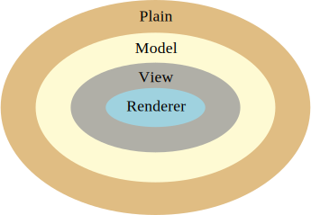

Part of the Getting Started with Infusion Component Design Tutorial
The Infusion Framework provides lots of supports for creating components. We have defined a number of different types, or grades, of component, and the Framework will automatically set up different stuff for you depending on which grade of component you create. (For more advanced information about grades, see Component Grades.)
The basic types are:
- plain component: the most basic type
- model component: for components that will have to maintain an abstract data model
- view component: for components that have a user interface
- renderer component: for components that want to render the user interface using a template
These types of components build upon each other, a teeny little bit like inheritance:
- model components add support for models to plain components
- view components support models, and also add support for views.
- renderer components are view components with the Renderer added.

For this tutorial, we suggest you work through all of the examples in order, to understand what each type of component offers. That way, you'll be in a better position to decide which grade you'll need for your components. Regardless of grade, the basic process for creating a component is the same. The next page in this tutorial will explain this basic process using the plain component, but you will see the same process for each of the component types.
Next: Basic Component Creation